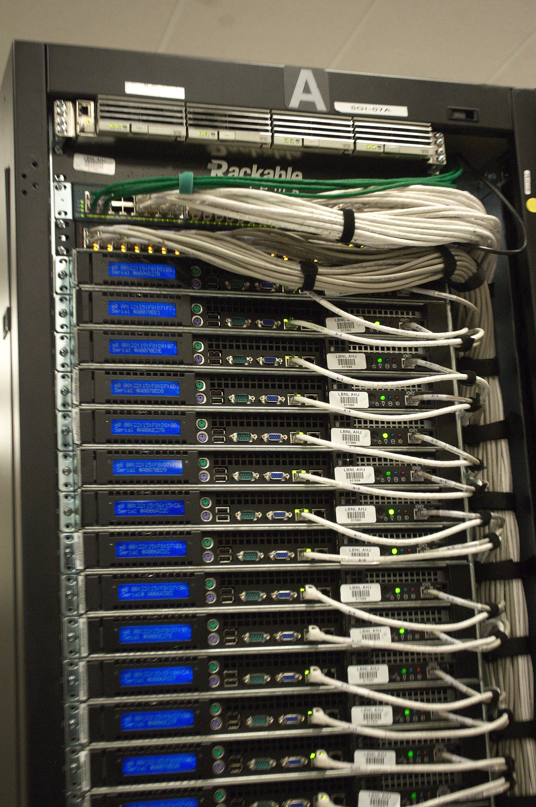
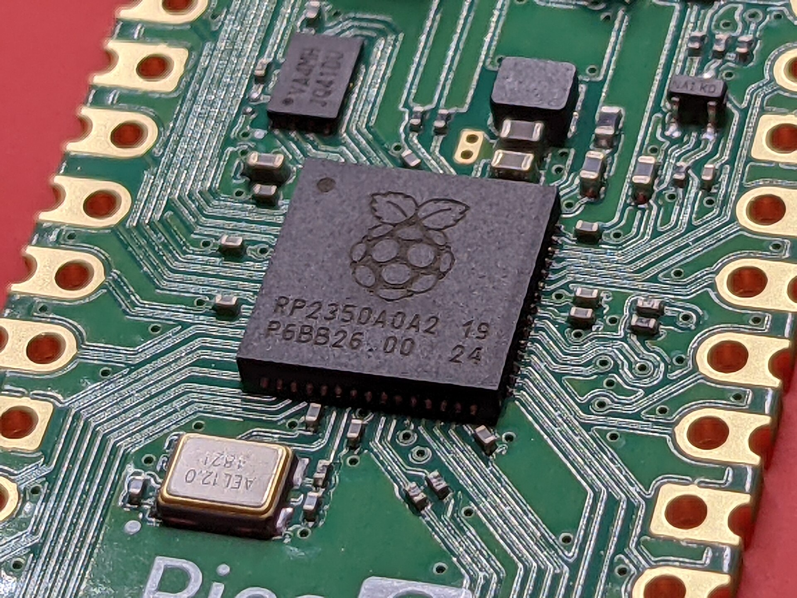

A digital forensics case study: detecting and proving an LSASS credential-dumping technique, end to end.
Case DFIR-2026-001 · a training exercise in a sealed lab# fires when Sysmon reports a handle opened to LSASS rule id=100011 level=14 mitre T1003.001 field targetImage → lsass.exe field grantedAccess → 0x1410 (read mask) ALERT Process accessed LSASS memory
A Windows endpoint had its LSASS memory read. This is the whole record of detecting it and proving how.
MITRE ATT&CK T1003.001, simulated, detected, acquired, and analysed end to end.
One Windows endpoint. One credential-dumping technique, run on purpose inside a sealed lab. What follows is the full record of catching it, imaging the machine, and proving, hash by hash, exactly what happened.
The examiner. A digital-forensics student working the case as attacker, SOC analyst, and examiner at once, following the NIST SP 800-61 lifecycle from preparation to post-incident.
The technique. T1003.001 reads credential material straight out of LSASS process memory. It is simulated safely here with Atomic Red Team, never real malware.
The range. Three virtual machines on a host-only network with no route to the internet: a Windows victim, a Kali attacker, and a Wazuh plus SIFT analysis box.
The record. Everything is in the repository: the attack script, the evidence manifest with SHA-256 hashes, the Volatility and Autopsy notes, and the final report.
Volatile first, nothing worked on originals, integrity fixed with a hash the moment each exhibit is taken.

The machines under examinationid exhibit tool integrity E001 memory .mem FTK Imager sha256 at acquisition E002 disk .E01 FTK Imager sha256 at acquisition E003 Sysmon .evtx wevtutil sha256 at acquisition E004 Wazuh .json dashboard sha256 at acquisition
<ProcessAccess onmatch="include"> <TargetImage condition="image">lsass.exe</TargetImage> </ProcessAccess> # Event ID 10 is the T1003.001 signature on the wire
Memory, disk, and a fused super-timeline. Each confirms the same sequence of actions.
$ vol -f E001.mem windows.handles --pid <lsass_pid> → which process held a read handle to lsass.exe $ vol -f E001.mem windows.cmdline → full command line of the dumping process $ vol -f E001.mem windows.malfind → injected / executable private memory

Memory: where the credentials lived$ log2timeline.py --storage-file timeline.plaso E002-disk.E01 $ psort.py -o dynamic -w super-timeline.csv timeline.plaso # the sequence the timeline reconstructs: 1 prefetch tool executed on victim 2 sysmon 10 handle opened to lsass.exe (0x1410) 3 filestat credential dump written to disk 4 wazuh level 14 alert raised
Every exhibit is fixed with a SHA-256 hash the moment it is taken, then re-checked before analysis. Type anything below and your browser computes the same hash, locally, the way the manifest records it.
computing…Runs entirely in your browser via the Web Crypto API. Nothing is uploaded.
NIST SP 800-61 lifecycle · MITRE ATT&CK T1003.001 · isolated host-only lab.
A training exercise. No real systems, people, or data are involved.